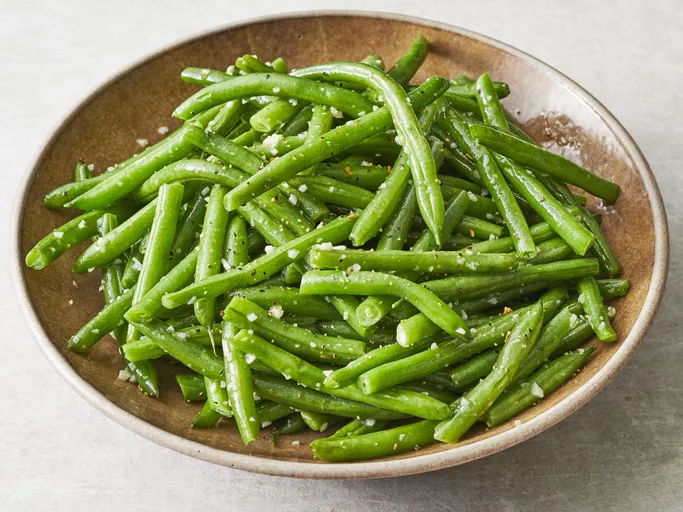

Green Beans

Cooked green beans covered in garlic and butter.
Ingredients
- 1 pound fresh green beans, trimmed and snapped in half
- 3 tablespoons butter
- 3 cloves garlic, minced
- ⅛ teaspoon lemon-pepper seasoning, or more to taste
- salt to taste
Steps
- Place green beans into a large skillet and cover with water; bring to a boil. Reduce heat to medium-low and simmer until beans just start to soften, 3 to 5 minutes.
- Drain and return to the skillet. Add butter and stir until melted, 1 to 2 minutes.
- Add garlic; cook until tender and fragrant, 1 to 2 minutes.
- Season with lemon-pepper seasoning and salt before serving.